4.10 综合案例：垃圾分类之模型构建与训练¶
学习目标¶
- 目标
- 掌握EfficientNet模型原理
- 掌握warmup以及余弦退火学习率原理
- 应用
- 应用完成垃圾分类的训练过程
- 应用完成余弦退火与warmup的实现
4.10.1 EfficientNet模型介绍¶
先再来看一遍efficientnet的取得的成绩

可以看出 EfficientNet 系列完胜了其他所有的卷积网络。其中EfficientNet-B7实现了ImageNet的state-of-the-art率，达到了 84.4%。但是它的参数量相比 GPipe 减少了 8.4 倍，并且推理速度达到了 GPipe 的 6.1 倍。更加细节的数据可以参考后面的实验部分。
论文地址：https://arxiv.org/pdf/1905.11946.pdf
4.10.1.1 摘要¶
作者系统地研究了模型缩放并且仔细验证了**网络深度、宽度和分辨率之间的平衡可以导致更好的性能表现**。提出了一种新的缩放方法——使用一个简单高效的复合系数来完成对深度/宽度/分辨率所有维度的统一缩放。在MobileNets和ResNet上展示了这种缩放方法的高效性。为了进一步研究，我们使用神经架构搜索设计了一个baseline网络。使用神经架构搜索来设计新的baseline并进行扩展以获得一系列模型，称EfficientNets。
引入：
一般ConvNets的精度随着它的size增加，有很多工作通过增加ConvNets的宽度、深度或者图像分辨率去提升网络的性能。尽管可以任意缩放二维或三维，但任意缩放需要繁琐的手动调整，并且仍然经常产生次优的精度和效率。
作者重新思考和研究了ConvNets的缩放问题，是否存在一种原则性的方法缩放ConvNets，从而实现更高的精度和效率？作者的实证研究表明，平衡网络宽度/深度/分辨率的所有维度是至关重要的，且可通过简单地按比例缩放每个维度来实现这种平衡。基于此，提出了一种简单而有效的复合缩放方法。
4.10.1.2 原理介绍¶
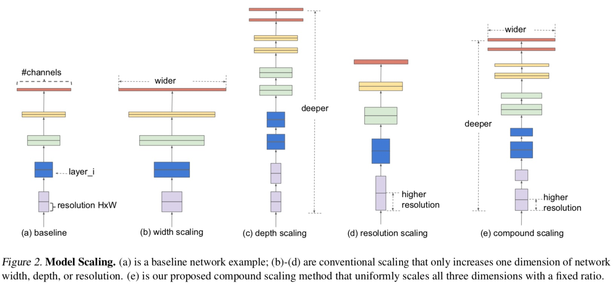
-
这种复合缩放方法是有意义的，因为如果输入图像更大，则网络需要更多层来增加感知场，并且需要更多通道来捕获更大图像上的更细粒度图案。
-
深度(
)： 更深的网络可以捕获更丰富、更复杂的特征，并且可以很好地泛化新任务。 然而由于梯度消失问题，更深层次的网络也更难训练。虽然跳层连接和批量归一化等可以缓解训练问题，但非常深的网络的准确度增益会减少：例如，ResNet-1000和ResNet-101有相似精度。
- 宽度(
)：更宽的网络往往能够捕获更细粒度的特征，并且更容易训练。 然而，极宽但浅的网络往往难以捕获更高级别的特征。
- 分辨率(
)：使用更高分辨率的输入图像，网络可以捕获更细粒度的特征。
1、复合模型缩放-问题建模¶
对于ConvNet（卷积网络）的第 层可以定义为一个函数：
。模型缩放跟ConvNet设计去寻找最优结构
不一样，模型缩放是去寻找
的最佳宽度
、长度
和分辨率
，通过固定住
，模型缩放简化了资源限制问题。在给定资源限制的情况下，去最大化模型的精度，就变成了以下优化问题：
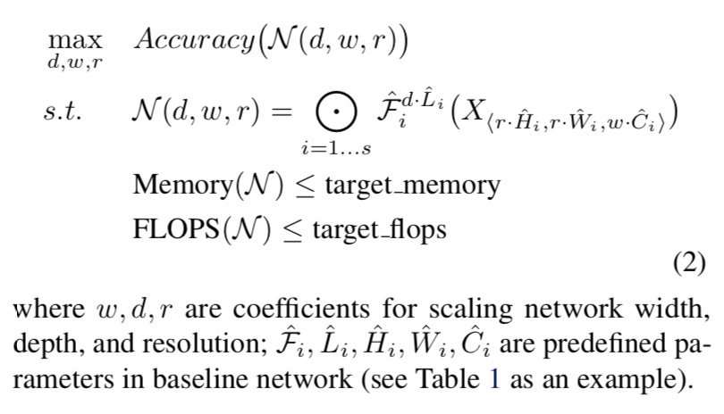
- 1、最上方为要优化的准确率
- 2、中间N代表一个完整卷积网络
- F_{i}^{L}表示某layerF被重复了L次在卷积结构层i中（可以理解Resnet某个结构重复若干次）
- X为某i层的输入分别为H，W，C
下面两张图表示每个维度的影响和三个维度的比率调整的影响
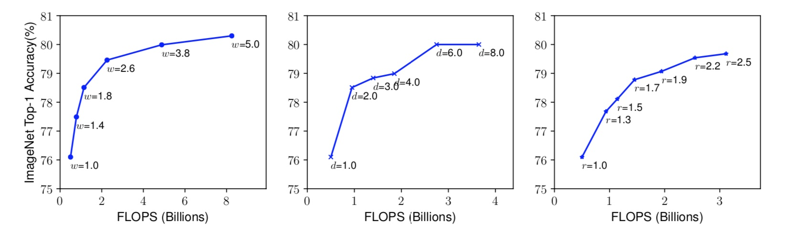
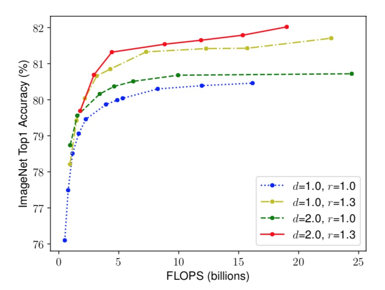
表示比较了不同网络深度和分辨率下的宽度缩放，如下图所示。在不改变深度（d = 1.0）和分辨率（r = 1.0）的情况下缩放网络宽度w，则精度会很快达到饱和。 随着更深（d = 2.0）和更高分辨率（r = 2.0），宽度缩放在相同的FLOPS成本下实现了更好的精度。
2、新的复合方法¶
使用一个复合系数 以原则方式统一缩放网络宽度、深度和分辨率
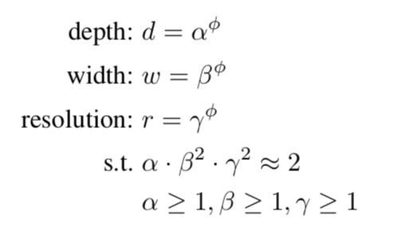
其中 是可以通过小网格搜索确定的常数。
是用户指定的系数，控制有多少资源可用于模型缩放，而
指定如何将这些额外资源分配给网络宽度，深度和分辨率。在本文中，作者约束
，使得对于任何新的
，总FLOPS将大约增加
。
拓展：常规卷积运算的FLOPS与
成正比，即双倍网络深度将使FLOPS加倍。但网络宽度或分辨率加倍会使FLOPS增加四倍。
4.10.1.3 Efficientnet 架构¶
所以通过上面的方法，作者找到了一个新的baseline（（MBConv），类似于MobileNetV2和MnasNet）来评估，称为EfficientNet-B0。
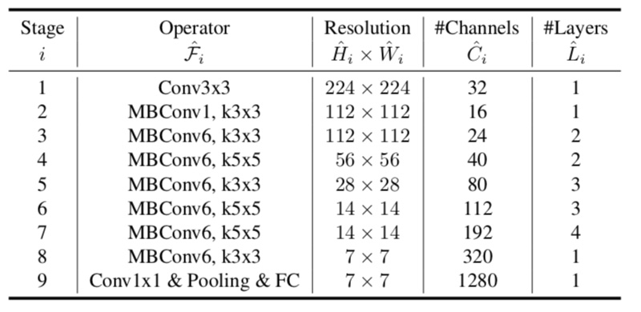
- 步骤1：首先确定φ= 1，假设有两倍的可用资源，并根据公式2和3进行
的小网格搜索。作者找到了EfficientNet-B0满足约束的最佳值
- 步骤2：然后我们将
固定为常数，并使用公式3扩展具有不同
的基线网络，以获得EfficientNet-B1至B7（也就是根据自己的计算资源来选择合适大小的网络），细节如下

4.10.1.4 实验¶
- 对MobileNets 和 ResNets进行缩放
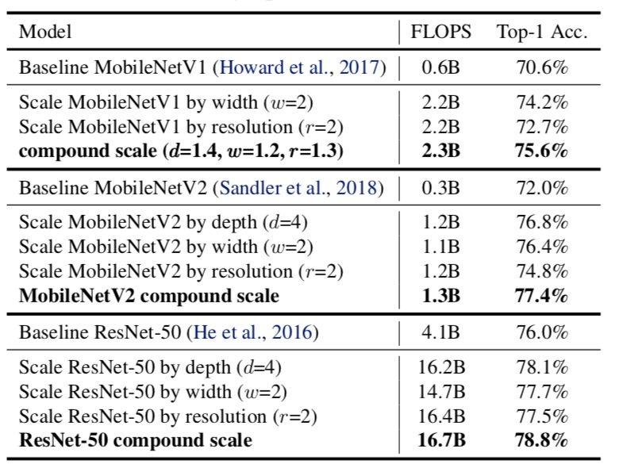
这个复合缩放方法提高了所有这些模型的准确性，表明了缩放方法对现有的卷积网络结构有效性。
- 类激活图说明了具有复合缩放的模型倾向于关注具有更多对象细节的更相关区域，而其他模型要么缺少对象细节，要么无法捕获图像中的所有对象。
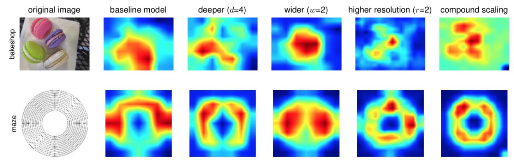
- 在各比赛中做迁移学习得成就

- 与公开可用模型相比，EfficientNet模型减少了平均4.7倍（最多21倍）的参数，同时实现了更高的精度。
- 与最先进的模型相比，EfficientNet模型在8个数据集中有5个仍然超过了它们的准确度，且使用的参数减少了9.6倍。
最终各种模型的精度 - 参数曲线，红色为EfficientNet的结果，明显比各个模型精度高，参数量少。
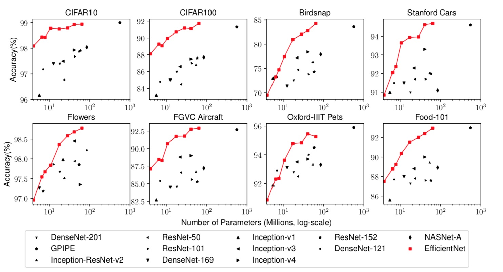
注：最终的效果比率，都是在大量的设备和模型上计算得来的，资源消耗不可想象。Google有足够的资源和设备（TPU）去做。
4.10.2 垃圾分类开源EfficientNet实现介绍¶
4.10.2.1 模型目录¶
TensorFlow2.0 可进行迁移学习的实现版本不存在efficientnet，需要第三方实现的模型两种选择：¶
1、可迁移学习的TF低版本能使用**（部分操作不支持默认Eager 模式）**
https://github.com/calmisential/Basic_CNNs_TensorFlow2
我们选择的是这个版本，可以在与训练模型上迁移，使用简单
from efficientnet import EfficientNetB0
EfficientNetB0(weights=None, include_top=False, input_shape=(336, 336, 3))
2、TF2.0实现版本不能使用在imagenet上的与训练模型，版本简单易懂，项目中也含有其他的模型
https://github.com/Tony607/efficientnet_keras_transfer_learning
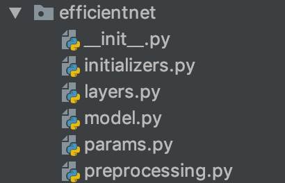
- model.py: 模型的主结构
- 其他文件为相关封装接口
去工程中看看指定模型。其中参数include_top，指定了我们可以进行迁移学习：
if include_top:
x = KL.GlobalAveragePooling2D(data_format=global_params.data_format)(x)
if global_params.dropout_rate > 0:
x = KL.Dropout(global_params.dropout_rate)(x)
x = KL.Dense(global_params.num_classes, kernel_initializer=DenseKernalInitializer())(x)
x = KL.Activation('softmax')(x)
else:
if pooling == 'avg':
x = KL.GlobalAveragePooling2D(data_format=global_params.data_format)(x)
elif pooling == 'max':
x = KL.GlobalMaxPooling2D(data_format=global_params.data_format)(x)
4.10.3 优化算法以及学习率trick¶
4.10.2.1 Rectified Adam(Adam with warm up)¶
RAdam能根据方差分散度，动态地打开或者 关闭自适应学习率，并且提供了一种不需要可 调参数学习率预热的方法。
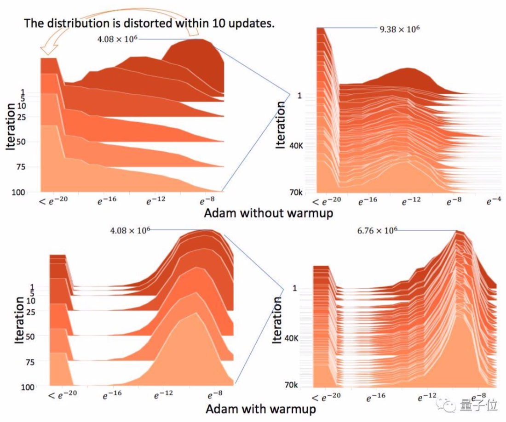
上述结果表明使用原始Adam必须预热，否则正态分布会变得扭曲
4.10.2.2 Warmup¶
- 定义：学习率预热就是在刚开始训练的时候先使用一个较小的学习率，训练一些epoches或iterations，等模型稳定时再修改为预先设置的学习率进行训练。
学习率是神经网络训练中最重要的超参数之一，针对学习率的技巧有很多。Warm up是在ResNet论文中提到的一种学习率预热的方法。
- 原因：由于刚开始训练时模型的权重(weights)是随机初始化的，此时选择一个较大的学习率，可能会带来模型的不稳定。
- 论文中使用一个110层的ResNet在cifar10上训练时，先用0.01的学习率训练直到训练误差低于80%(大概训练了400个iterations)，然后使用0.1的学习率进行训练。
理解：刚开始模型对数据的“分布”理解为零，或者是说“均匀分布”；在第一轮训练的时候，每个数据点对模型来说都是新的，模型会很快地进行数据分布修正，如果这时候学习率就很大，极有可能导致开始的时候就对该数据“过拟合”，后面要通过多轮训练才能拉回来，浪费时间。
4.10.2.3 余弦学习率衰减（Cosine Learning rate decay）¶
余弦学习率衰减的方式，Cosine Learning rate decay。公式如下： $$ \eta_t=\frac{1}{2} (1+cos(\frac{t\pi}{T})) $$ 下图是逐步衰减学习率与余弦学习率衰减的方式对比：
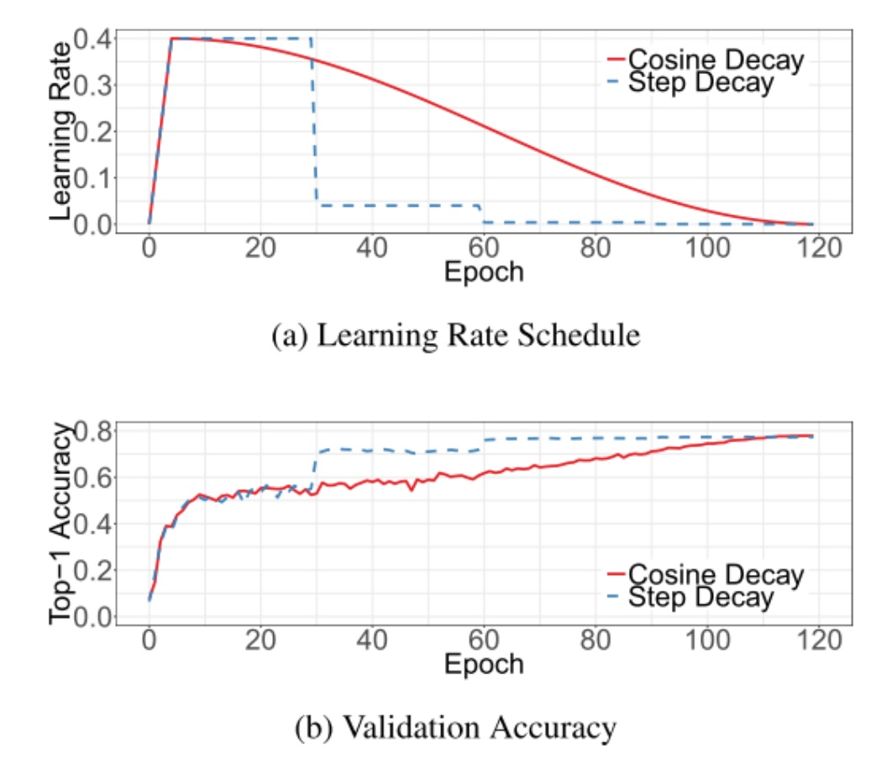
- 现象：当Step Decay方法的学习率已经较小的时候，Cos Decay方法的学习仍比较大，因而能够加速整个训练的过程。但是看图中b，很明显Step Decay再衰减之后，准确率就上来了，说明衰减之前的数量级效用已经不强了，这个时候Cos decay还是那个数量级，所以速度就比Step Decay慢了
- 结果：
- 1、cos的学习率的前期是warm-up阶段，这个时候是以线性增长的方式增长到初始学习率，然后开始执行cos的学习率变化，最终两种学习率达到一致。从准确性的角度来看，使用step的方式似乎学习的更快一些。而且其变化的拐点和其学习率的拐点是对应着的，即学习率降了之后，验证的准确性也跟着开始提升，而cos学习率的整个过程中准确性都很平稳，最终两者的准确性也是一致。
- 2、区别在于中间的学习过程。而且step的方式有一定的随机性，不知道要以多大的step来改变学习率，如果这个’step’可以根据某种方式量化
定义：常用的Learning Rate Decay是Step Decay，即每隔N个Epoch，learning rate乘上一个固定decay系数。
- 但是Step Decay不好的地方在于学习率衰减的时候，跳跃变化较大，带来了较大的冲量Momentum
4.10.2.4 TensorFlow实现¶
Keras 的 callbacks 中有 ReduceLROnPlateau() 和 LearningRateScheduler() 函数可以动态的调整学习率。但是前者只在验证误差停止衰减的时候减小学习率，后者只能在每个 Epoch 开始或结束的时候，改变学习率两者使用参考文档：https://www.tensorflow.org/versions/r2.0/api_docs/python/tf/keras/callbacks/LearningRateScheduler#class_learningratescheduler
如果需要在训练的时候每批次更加细致的控制学习率，需要自定义回调方法
1、tf.keras.callbacks.Callback¶
该类在Model 的.fit()方法中会调用一下回调方法
- on_batch_begin( batch, logs=None)
- 一批次数据开始时的处理
- on_batch_end(batch, logs=None)
- 一批次数据处理结束
- on_epoch_begin和on_epoch_end
4.10.3 垃圾分类带有warmup的余弦退火学习率调度实现¶
4.10.3.1 流程分析¶
- 分为两个结算
- warmup阶段
- 余弦退火阶段
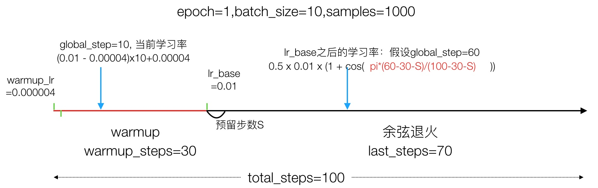
4.10.3.2 完整代码过程实现¶
参考文件，并运行测试
- 步骤：
- 1、自定义WarmUpCosineDecayScheduler调度器，实现批次前后的处理逻辑
- 2、实现warmup的余弦退火学习率计算方法
1、自定义WarmUpCosineDecayScheduler调度器，实现批次前后的处理逻辑
import numpy as np
import tensorflow as tf
from tensorflow.keras import backend as K
from tensorflow.keras.models import Sequential
from tensorflow.keras.layers import Dense
import os
os.environ["TF_CPP_MIN_LOG_LEVEL"] = "2"
class WarmUpCosineDecayScheduler(tf.keras.callbacks.Callback):
"""带有warmup的余弦退火学习率调度
"""
def __init__(self,
learning_rate_base,
total_steps,
global_step_init=0,
warmup_learning_rate=0.0,
warmup_steps=0,
hold_base_rate_steps=0,
verbose=0):
"""
初始化参数
:param learning_rate_base: 基础学习率
:param total_steps: 总共迭代的批次步数 epoch * num_samples / batch_size
:param global_step_init: 初始
:param warmup_learning_rate: 预热学习率默认0.0
:param warmup_steps:预热的步数默认0
:param hold_base_rate_steps:
:param verbose:
"""
super(WarmUpCosineDecayScheduler, self).__init__()
self.learning_rate_base = learning_rate_base
self.total_steps = total_steps
self.global_step = global_step_init
self.warmup_learning_rate = warmup_learning_rate
self.warmup_steps = warmup_steps
self.hold_base_rate_steps = hold_base_rate_steps
# 是否在每次训练结束打印学习率
self.verbose = verbose
# 记录所有批次下来的每次准确的学习率，可以用于打印显示
self.learning_rates = []
def on_batch_end(self, batch, logs=None):
# 1、批次开始前当前步数+1
self.global_step = self.global_step + 1
# 2、获取优化器上一次的学习率，并记录
lr = K.get_value(self.model.optimizer.lr)
self.learning_rates.append(lr)
def on_batch_begin(self, batch, logs=None):
# 1、通过参数以及记录的次数和上次学习率
lr = cosine_decay_with_warmup(global_step=self.global_step,
learning_rate_base=self.learning_rate_base,
total_steps=self.total_steps,
warmup_learning_rate=self.warmup_learning_rate,
warmup_steps=self.warmup_steps,
hold_base_rate_steps=self.hold_base_rate_steps)
# 2、设置优化器本次的学习率
K.set_value(self.model.optimizer.lr, lr)
if self.verbose > 0:
print('\n批次数 %05d: 设置学习率为'
' %s.' % (self.global_step + 1, lr))
这里面涉及到一个设置当前优化器学习率的使用，会用到keras.backend这个模块。keras是一种基于模块的高级深度学习开发框架，它并没有仅依赖于某一种高速底层张量库，而是对各种底层张量库进行高层模块封装，让底层库完成诸如张量积、卷积操作。在keras中，各种底层库（Google开发的TensorFlow、蒙特利尔大学实验室开发的Theano、微软开发的CNTK）都可以作为后端（backend）引擎为keras模块提供服务。
问题：如何修改Keras使用的backend¶
（1）通过修改keras配置文件来修改backend
一旦运行过一次Keras，就会在$HOME/.keras下生成配置文件keras.json，该文件的"backend"字段的值即为keras所使用的后端库，默认情况下，该值为"tensorflow"。用户可以根据需要选择另外两个库"theano"、"cntk"，甚至自己写的底层库。
（2）通过运行Python脚本时增加配置项指定backend
$ KERAS_BACKEND=theano python -c "from keras import backend"
Using Theano backend.
导入使用：
from keras import backend as K
其中两个方法可以设置张量的值：
lr = K.get_value(self.model.optimizer.lr)
K.set_value(self.model.optimizer.lr, lr)
2、实现warmup的余弦退火学习率计算方法¶
- 步骤：
- 1、余弦退火学习率计算
- 2、warmup之后的学习率计算
- 如果预留大于0，判断目前步数是否 > warmup步数+预留步数，是的话返回刚才上面计算的学习率，不是的话使用warmup之后的基础学习率
- 3、warmup学习率计算，并判断大小
- 4、如果最后当前到达的步数大于总步数，则归0，否则返回当前的计算出来的学习率（可能是warmup学习率也可能是余弦衰减结果）
代码如下
def cosine_decay_with_warmup(global_step,
learning_rate_base,
total_steps,
warmup_learning_rate=0.0,
warmup_steps=0,
hold_base_rate_steps=0):
"""
每批次带有warmup余弦退火学习率计算
:param global_step: 当前到达的步数
:param learning_rate_base: warmup之后的基础学习率
:param total_steps: 总需要批次数
:param warmup_learning_rate: warmup开始的学习率
:param warmup_steps:warmup学习率 步数
:param hold_base_rate_steps: 预留总步数和warmup步数间隔
:return:
"""
if total_steps < warmup_steps:
raise ValueError('总步数必须大于warmup')
# 1、余弦退火学习率计算
# 从warmup结束之后计算
# 0.5 * 0.01 * (1 + cos(pi*(1-5-0)/(10 - 5 - 0))
learning_rate = 0.5 * learning_rate_base * (1 + np.cos(
np.pi *
(global_step - warmup_steps - hold_base_rate_steps
) / float(total_steps - warmup_steps - hold_base_rate_steps)))
# 2、warmup之后的学习率计算
# 如果预留大于0，判断目前步数是否 > warmup步数+预留步数，是的话返回刚才上面计算的学习率，不是的话使用warmup之后的基础学习率
if hold_base_rate_steps > 0:
learning_rate = np.where(global_step > warmup_steps + hold_base_rate_steps,
learning_rate, learning_rate_base)
# 3、warmup步数是大于0的
if warmup_steps > 0:
if learning_rate_base < warmup_learning_rate:
raise ValueError('warmup后学习率必须大于warmup开始学习率')
# 1、计算一个0.01和0.000006的差距/warmup_steps，得到warmup结束前增加多少
slope = (learning_rate_base - warmup_learning_rate) / warmup_steps
# 2、计算warmup下一步第global_step的学习率
warmup_rate = slope * global_step + warmup_learning_rate
# 3、判断global_step小于warmup_steps的话，返回这个warmup当时的学习率，否则直接返回余弦退火计算的
learning_rate = np.where(global_step < warmup_steps, warmup_rate,
learning_rate)
# 4、如果最后当前到达的步数大于总步数，则归0，否则返回当前的计算出来的学习率（可能是warmup学习率也可能是余弦衰减结果）
return np.where(global_step > total_steps, 0.0, learning_rate)
通过以下代码进行测试：
if __name__ == '__main__':
# 1、创建模型
model = Sequential()
model.add(Dense(32, activation='relu', input_dim=100))
model.add(Dense(10, activation='softmax'))
model.compile(optimizer='rmsprop',
loss='categorical_crossentropy',
metrics=['accuracy'])
# 2、参数设置
sample_count = 1000 # 样本数
epochs = 4 # 总迭代次数
warmup_epoch = 3 # warmup 迭代次数
batch_size = 16 # 批次大小
learning_rate_base = 0.0001 # warmup后的初始学习率
total_steps = int(epochs * sample_count / batch_size) # 总迭代批次步数
warmup_steps = int(warmup_epoch * sample_count / batch_size) # warmup总批次数
# 3、创建测试数据
data = np.random.random((sample_count, 100))
labels = np.random.randint(10, size=(sample_count, 1))
# 转换目标类别
one_hot_labels = tf.keras.utils.to_categorical(labels, num_classes=10)
# 5、创建余弦warmup调度器
warm_up_lr = WarmUpCosineDecayScheduler(learning_rate_base=learning_rate_base,
total_steps=total_steps,
warmup_learning_rate=4e-06, # warmup开始学习率
warmup_steps=warmup_steps,
hold_base_rate_steps=0,
)
# 训练模型
model.fit(data, one_hot_labels, epochs=epochs, batch_size=batch_size, verbose=0, callbacks=[warm_up_lr])
print(warm_up_lr.learning_rates)
结果：
[4e-06, 4.513369e-06, ...., 7.281053e-05, 7.0564354e-05, 6.826705e-05, 6.592433e-05, 6.354202e-05, 6.112605e-05, 5.868241e-05, 5.6217184e-05, 5.3736505e-05, 5.1246534e-05, 4.8753467e-05, 4.6263496e-05, 4.3782813e-05, 4.131759e-05, 3.8873954e-05, 3.6457976e-05, 3.4075667e-05, 3.173295e-05, 2.9435645e-05, 2.7189468e-05, 2.5e-05, 2.2872688e-05, 2.0812817e-05, 1.882551e-05, 1.6915708e-05, 1.5088159e-05, 1.3347407e-05, 1.1697778e-05, 1.0143374e-05, 8.688061e-06, 7.335456e-06, 6.0889215e-06, 4.9515565e-06, 3.9261895e-06, 3.015369e-06, 2.2213596e-06, 1.5461356e-06, 9.913756e-07, 5.584587e-07, 2.4846122e-07, 6.215394e-08, 0.0, 0.0]
4.10.4 模型训练过程实现¶
- 步骤：
- 1、建立读取数据的sequence
- 2、建立模型，指定模型训练相关参数
- 模型修改
- 模型训练优化器指定
- 3、指定训练的callbacks，并进行模型的训练
- 4、训练指定
其中代码运行逻辑
if __name__ == '__main__':
args = parser.parse_args()
train_model(args)
参数指定使用argparse工具：pip install argparse
parser = argparse.ArgumentParser()
parser.add_argument("data_url", type=str, default='./data/garbage_classify/train_data', help="data dir", nargs='?')
parser.add_argument("train_url", type=str, default='./garbage_ckpt/', help="save model dir", nargs='?')
parser.add_argument("num_classes", type=int, default=40, help="num_classes", nargs='?')
parser.add_argument("input_size", type=int, default=300, help="input_size", nargs='?')
parser.add_argument("batch_size", type=int, default=16, help="batch_size", nargs='?')
parser.add_argument("learning_rate", type=float, default=0.0001, help="learning_rate", nargs='?')
parser.add_argument("max_epochs", type=int, default=30, help="max_epochs", nargs='?')
parser.add_argument("deploy_script_path", type=str, default='', help="deploy_script_path", nargs='?')
parser.add_argument("test_data_url", type=str, default='', help="test_data_url", nargs='?')
其中nargs是为了在pycharm中运行时，不输入命令行参数值也能直接运行。否则需要命令行运行
python train.py data_url .....
1、建立读取数据的sequence
import multiprocessing
import numpy as np
import argparse
import tensorflow as tf
from tensorflow.keras.callbacks import TensorBoard, Callback
from tensorflow.keras.layers import Dense, GlobalAveragePooling2D
from tensorflow.keras.models import Model
from tensorflow.keras.optimizers import Adam, RMSprop
from efficientnet import model as EfficientNet
from data_gen import data_from_sequence
from utils.lr_scheduler import WarmUpCosineDecayScheduler
import os
os.environ["TF_CPP_MIN_LOG_LEVEL"] = "2"
# 注意关闭默认的eager模式
tf.compat.v1.disable_eager_execution()
def train_model(param):
"""训练模型
:param param: 传入的命令参数
:return:
"""
# 1、建立读取数据的sequence
train_sequence, validation_sequence = data_from_sequence(param.data_url, param.batch_size,
param.num_classes, param.input_size)
2、建立模型，指定模型训练相关参数
# 2、建立模型，指定模型训练相关参数
model = model_fn(param)
optimizer = Adam(lr=param.learning_rate)
objective = 'categorical_crossentropy'
metrics = ['accuracy']
# 模型修改
# 模型训练优化器指定
model.compile(loss=objective, optimizer=optimizer, metrics=metrics)
model.summary()
# 判断模型是否加载历史模型
if os.path.exists(param.train_url):
filenames = os.listdir(param.train_url)
model.load_weights(filenames[-1])
print("加载完成!!!")
def model_fn(param):
"""迁移学习修改模型函数
:param param:
:return:
"""
base_model = EfficientNet.EfficientNetB3(include_top=False, input_shape=(param.input_size, param.input_size, 3),
classes=param.num_classes)
x = base_model.output
x = GlobalAveragePooling2D(name='avg_pool')(x)
predictions = Dense(param.num_classes, activation='softmax')(x)
model = Model(inputs=base_model.input, outputs=predictions)
return model
3、指定训练的callbacks，并进行模型的训练
sample_count = len(train_sequence) * param.batch_size
epochs = param.max_epochs
warmup_epoch = 5
batch_size = param.batch_size
learning_rate_base = param.learning_rate
total_steps = int(epochs * sample_count / batch_size)
warmup_steps = int(warmup_epoch * sample_count / batch_size)
warm_up_lr = WarmUpCosineDecayScheduler(learning_rate_base=learning_rate_base,
total_steps=total_steps,
warmup_learning_rate=0,
warmup_steps=warmup_steps,
hold_base_rate_steps=0,
)
#（3）模型保存相关参数
check = tf.keras.callbacks.ModelCheckpoint(param.train_url+'weights_{epoch:02d}-{val_accuracy:.2f}.h5',
monitor='val_accuracy',
save_best_only=True,
save_weights_only=False,
mode='auto',
period=1)
4、训练
这里使用model.fit_generator函数，因为填入参数的是一个迭代序列，指定工作线程数(multiprocessing.cpu_count() * 0.7。
model.fit_generator(
train_sequence,
steps_per_epoch=int(sample_count / batch_size),
epochs=param.max_epochs,
verbose=1,
callbacks=[check, tensorboard, warm_up_lr],
validation_data=validation_sequence,
max_queue_size=10,
workers=int(multiprocessing.cpu_count() * 0.7),
use_multiprocessing=True,
shuffle=True
)
4.10.5 总结¶
- EfficientNet模型原理
- warmup以及余弦退火学习率原理
- 完成垃圾分类的训练过程
- 完成余弦退火与warmup的实现